Upgrades（升级）
升级
Upgrade 是你在 The In-Between 花费 Token 购买的强力强化。它们的效果从小幅属性提升，到彻底改变游玩方式都有。
Upgrade 分属于三位 NPC，每位 NPC 都有自己的主题。
注意，虽然许多属性相关升级的叠加类型标为线性，但大多数属性本身可能天然是双曲型，或会受到衰减影响。各属性的细节见 Stats（属性） 页面。
购买 upgrade 需要 Tokens（代币）。
如果你不确定 “Stack Types” 是什么意思，请查看这个 页面 了解更多。
Crystal of Perseverance
Crystal of Perseverance 提供与最大 HP、防御，以及所有生存能力相关的升级。
| 图片 | 稀有度 | 技能 | 描述 | 叠加类型 |
|---|---|---|---|---|
| 普通 | Fluffy | 最大 HP：+10（每层 +10） | 线性 | |
| 普通 | Gluttonous | 受到治疗 +5%（每层 +5%） | 线性 | |
| 普通 | Sacrificial Lamb | 死亡时，为其他每位队友治疗 25 HP（每层 +25 HP） | 线性 | |
| 普通 | Swarm Enforcer | 你周围 32 米内每有一个敌人，获得 +1.5% 防御。（每层 +1.5% 防御） | 线性 | |
| 普通 | Vitality | 生命回复：+80%（每层 +80%） | 线性 | |
| 普通 | Vital Drain | 暴击回复 2 HP（每层 +2 HP） | 线性 | |
| 稀有 | Adrenaline Fiend | 使用辅助技能回复 6 HP（每层 +6）；辅助技能冷却速率 +7%（每层 +7%）；受到治疗 -15%（每层 -15%） | 线性 | |
| 稀有 | Big and Lazy | 静止至少 1 秒时，获得额外 200% 生命回复（每层 +50%）。移动时，生命回复设为 0%。 | 线性 | |
| 稀有 | Big and Round | 击退抗性：+50%（每层 +50%）；最大 HP：+30（每层 +10）；跳跃高度：-10%（每层 -10%）；移动速度：-10%（每层 -10%） | 双曲/线性 | |
| 稀有 | Cold Blooded | FREEZING 状态效果持续时间减少 X%（每层 X%）；FROST 防御：+15%（每层 +15%）；FIRE 防御：-15%（每层 -15%） | 倒数/线性 | |
| 稀有 | Conductive Armor | PHYSICAL 防御 +20%（每层 +20%）；提高对 BLEEDING 状态效果的抗性（每层 +X%）；ELEMENTAL 防御 -5%（每层 -5%） | 线性 | |
| 稀有 | Holy Blessing | 掉到 LOW HP 时会引发一次大型爆炸，造成 X 点 LUMINOUS 伤害，并有 100% 几率施加 WEAKENED 状态效果。LUMINOUS 防御：+15%（每层 +15%）；SHADOW 防御：+15%（每层 +15%）；总伤害：-10%（每层 -10%） | 线性 | |
| 稀有 | Iron Skin | 防御：+8%（每层 +8%）；移动速度：-3%；总伤害：-2% | 线性 | |
| 稀有 | Last Stand | 受到伤害后若剩余 1 HP，获得短暂 INVINCIBLE 状态效果 | 双曲 | |
| 稀有 | Life Leech | 造成伤害时回复 1 HP（每层 +1）；总伤害：-10%（每层 -10%）；生命回复：-50%（每层 -50%）；受到治疗 -20% | 线性 | |
| 稀有 | Masochist | PARALYZED 状态效果持续时间减少 X%（每层 X%）；ELECTRIC 防御：+15%（每层 +15%）；PHYSICAL 防御：-10%（每层 -15%） | 倒数/线性 | |
| 稀有 | Nature’s Gift | 每 10 秒在 stage 的随机位置生成最多 3 个个人 Healing Aura（每级 +1），每个会为你治疗 20。 | 线性 | |
| 传奇 | Benison of Purification | 周期性向 64 米内最近的敌人发射造成 LUMINOUS 伤害的投射物。SHADOW 防御 +10%；总防御 -5% | 线性 | |
| 传奇 | Curse of Wrath | 周期性向 32 米内最近的敌人发射造成 SHADOW 伤害的投射物。LUMINOUS 防御 -20% | 线性 | |
| 传奇 | Glass Cannon | 伤害 +30%；生命 -50 | 双曲 | |
| 传奇 | Healthy Guard | 保持 FULL HP 15 秒后（每层 -X%），下一次受到的伤害减少 50%（每层 +50%） | 双曲 | |
| 传奇 | Mass Aspect | 生命：+75（每层 +75）；移动速度：-30%（每层 -30%） | 线性 | |
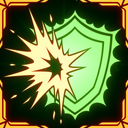 |
传奇 | Volatile Tenacity | 当 HP 高于 LOW HP 时受到致命伤害，会存活并留下 1 HP。冷却 150 秒（每层 +25%） | 双曲 |
Crystal of Mobility
Crystal of Mobility 提供与移动速度、攻击速度和辅助技能冷却相关的升级。
| 图片 | 稀有度 | 技能 | 描述 | 叠加类型 |
|---|---|---|---|---|
| 普通 | Athletic | 移动速度：+8%（每层 +8%） | 线性 | |
| 普通 | Eagle Eye | 投射物速度 +35% | 线性 | |
| 普通 | Hawkeye | 投射物距离 +10 m；投射物散布 -1% | 线性 | |
| 普通 | Quick Breath | 辅助技能冷却速率：-10%（每层 -10%） | 线性 | |
| 普通 | Springfoot | 跳跃高度：+20%（每层 +20%） | 线性 | |
| 普通 | Swift Hands | 攻击速度：+15%（每层 +15%） | 线性 | |
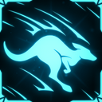 |
稀有 | Leg Day | 提高对 HEAVY 状态效果的抗性；移动速度 +5%；跳跃高度 +10% | 双曲 |
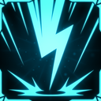 |
稀有 | Reactive Panic | 受到伤害会获得短暂 FRENZIED 状态效果 | 线性 |
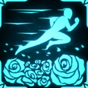 |
稀有 | Smell the Roses | 掉到 LOW HP 时，获得持续较久的 HASTE 状态效果，冷却 30 秒 | 双曲 |
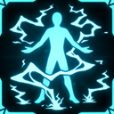 |
稀有 | Thunder Aura | 每秒对你周围半径内的敌人造成 ELECTRIC 伤害；伤害 -10%；移动速度 -5% | 线性 |
| 传奇 | Berserker’s Soul | 用主攻击造成伤害会获得一层 Berserker’s Soul，最多 X 层。每层给予 +X% 总伤害、+X% 攻击速度、-X% 移动速度。受到伤害会把层数清零。总伤害：-20%（每层 -20%）；攻击速度：-40%（每层 -40%） | 线性 | |
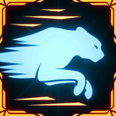 |
传奇 | Big and Speedy | 辅助技能冷却速率：-50%（每层 -50%）；防御：-20%（每层 -20%） | 线性 |
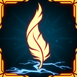 |
传奇 | Featherweight | 移动速度：+30%（每层 +30%）；防御：-20%（每层 -20%） | 线性 |
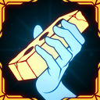 |
传奇 | Heavy Hand | 伤害 +30%；攻击速度 -40% | 双曲 |
| 传奇 | Partial Flight | 额外跳跃：+1（每层 +1） | 线性 | |
| 传奇 | Rapid Fire | 攻击速度：+50%（每层 +50%）；总伤害：-20%（每层 -20%） | 线性 | |
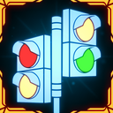 |
传奇 | Way of the Law | 周期性在 STOP 与 GO 状态效果之间切换。STOP 会降低移动与攻击速度，但提高伤害。GO 会提高移动与攻击速度，但降低伤害 | 线性/指数 |
Chrono Wizard
Chrono Wizard 提供的升级通常偏职业专属，或者并不适合所有职业。（例如，并不是每个职业默认都能受益于投射物速度。）
职业升级见 Classes（职业） 页面；这些升级也包含在 Chrono Wizard 中。
| 图片 | 稀有度 | 技能 | 描述 | 叠加类型 |
|---|---|---|---|---|
| 普通 | Full Focus | 暴击率 +5%；暴击伤害 +5% | 线性 | |
| 普通 | Potent Strike | 暴击有额外 6% 几率施加状态效果。 | 线性 | |
| 普通 | Sorcerer’s Mastery | ELEMENTAL 伤害 +8% | 线性 | |
| 普通 | Strength | PHYSICAL 伤害 +10% | 双曲 | |
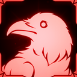 |
稀有 | An IQ Too High? | ELEMENTAL 伤害 +25%；投射物速度 -15%；攻击速度 -10% | 双曲 |
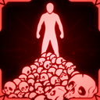 |
稀有 | Clutch or Kick | 队伍中每有一名死亡玩家，获得 +7% 伤害 | 线性 |
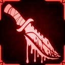 |
稀有 | Cutting Edge | 施加 BLEEDING 状态效果的几率 +10%；PHYSICAL 防御 -5% | 线性 |
| 稀有 | Fire Aspect | FIRE 防御 +15%；FIRE 伤害 +15%；施加 BURNING 状态效果的几率 +5%；FROST 防御 -10% | 线性 | |
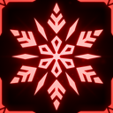 |
稀有 | Frost Aspect | FROST 防御 +15%；FROST 伤害 +15%；施加 FROZEN 状态效果的几率 +5%；FIRE 防御 -10% | 线性 |
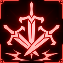 |
稀有 | Greater Focus | LOW HP 时暴击率 +10%；暴击伤害 +3% | 线性 |
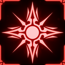 |
稀有 | Luminous Aspect | LUMINOUS 伤害 +15%；SHADOW 防御 +15%；施加 WEAKENED 状态效果的几率 +5%；ELEMENTAL 防御 -5% | 线性/双曲 |
| 稀有 | Poison Aspect | POISON 伤害 +15%；POISON 防御 +15%；施加 POISONED 状态效果的几率 +5%；受到治疗 -15% | 线性/双曲 | |
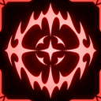 |
稀有 | Shadow Aspect | SHADOW 伤害 +15%；施加 BREACHED 状态效果的几率 +5%；LUMINOUS 防御 -10% | 线性/双曲 |
| 稀有 | Sticky | 你施加的状态效果持续时间略微延长；降低你对所有负面状态效果的抗性 | 线性 | |
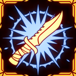 |
传奇 | Charged Strike | 暴击会引发爆炸；暴击率 -5% | 线性 |
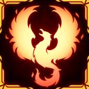 |
传奇 | Flaming Spirit | FULL HP 时，使用主要技能会发射一枚造成 FIRE 伤害的火球；受到治疗 -5%；生命回复 -20% | 线性 |
| 传奇 | Frozen Heart | FULL HP 时，使用主要技能会发射一根造成 FROST 伤害的冰锥；受到治疗 -5%；生命回复 -20% | 线性 | |
| 传奇 | Pocket Abacus | 你造成的每第 5 次伤害会变为必定暴击；暴击伤害 +10%；非暴击伤害 -10%；你不会再有暴击率 | 线性 | |
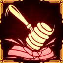 |
传奇 | Third Law | 受到伤害时，将该伤害 RAW 值的 150%（每层 +25%）作为 PHYSICAL 伤害返还给周围敌人 | 线性 |
| 传奇 | Warrior’s Will | 使用辅助技能会获得短暂 EMPOWERED 状态效果；辅助技能冷却 +15% | 双曲 |
职业专属
各职业都有自己的专属升级。所有职业专属升级请见各自的 individual 页面。